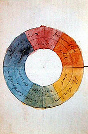
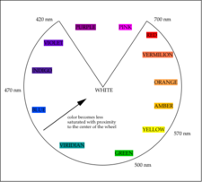
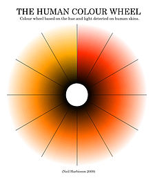
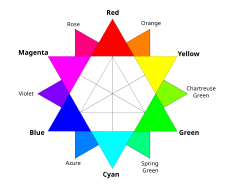
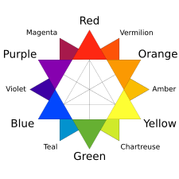
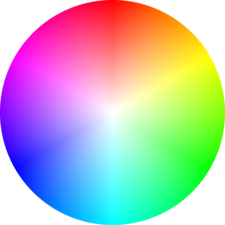

Some sources use the terms color wheel and color circle interchangeably. However, one term or the other may be more prevalent in certain fields or certain versions as mentioned above. For instance, some reserve the term color wheel for mechanical rotating devices, such as color tops, filter wheels or the Newton disc. Others classify various color wheels as color disc, color chart, and color scale varieties.
Colors of the color wheel
Trichromatic model
Most color wheels are based on three primary colors, three secondary colors, and the six intermediates formed by mixing a primary with a secondary, known as tertiary colors, for a total of 12 main divisions; some add more intermediates, for 24 named colors. They make use of the trichromatic model of color.
Subtractive
The typical artists' paint or pigment color wheel includes the blue, red, and yellow primary colors. The corresponding secondary colors are green, orange, and violet or purple. The tertiary colors are green-yellow, yellow-orange, orange-red, red-violet/purple, purple/violet-blue and blue-green.Non-digital visual artists typically use red, yellow, and blue primaries (RYB color model) arranged at three equally spaced points around their color wheel. Printers and others who use modern subtractive color methods and terminology use magenta, yellow, and cyan as subtractive primaries. Intermediate and interior points of color wheels and circles represent color mixtures. In a paint or subtractive color wheel, the "center of gravity" is usually black, representing all colors of light being absorbed.
Additive
A color wheel based on RGB (red, green, blue) additive primaries has cyan, magenta, and yellow secondaries. Alternatively, the same arrangement of colors around a circle can be described as based on cyan, magenta, and yellow subtractive primaries, with red, green, and blue being secondaries. Sometimes a RGV (red, green, violet) triad is used instead. In an additive color circle, the center is white or gray, indicating a mixture of different wavelengths of light (all wavelengths, or two complementary colors, for example).A color wheel based on HSV, labeled with HTML color keywords. The HSL and HSV color spaces are simple geometric transformations of the RGB cube into cylindrical form. The outer top circle of the HSV cylinder or the outer middle circle of the HSL cylinder can be thought of as a color wheel. There is no authoritative way of labelling the colors in such a color wheel, but the six colors which fall at the corners of the RGB cube are given names in the X11 color list, and are named keywords in HTML.
Newton's asymmetric color wheel based on musical intervals. Mixing "rays" in amounts given by the circles yields color "z (1704)

Goethe's symmetric color wheel with 'reciprocally evoked colors' (1810)

A color circle based on additive combinations of the light spectrum, after Schiffman (1990)

Human Color Wheel based on the hue and light detected on human skins, after Harbisson (2004-2009)

RGB color wheel

RYB color wheel

Color circle based on the HSV color space, showing all colors with a value (brightness) of 255 (100%). White is at the center, and fully saturated colors are at the outer edge. It is the circular face of the HSV "color cone".